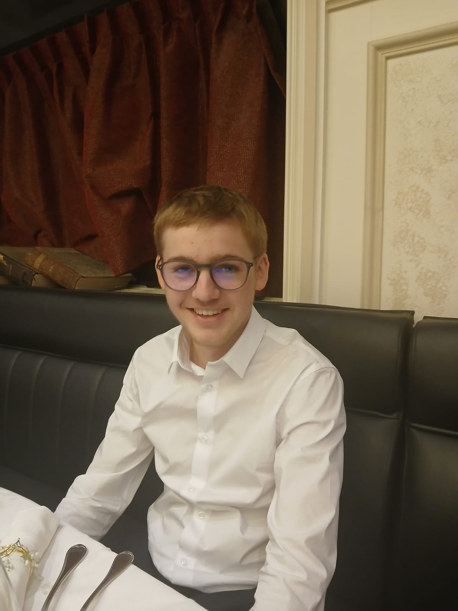

Bastian Pitois
Étudiant en BUT Réseaux et Télécommunications, je suis animé par une passion pour l'innovation technologique et la cybersécurité. Ces domaines me motivent à relever des défis complexes et à explorer des solutions innovantes.
Doté d'une curiosité naturelle, d'une rigueur et d'une forte capacité d'adaptation, je m'investis pleinement dans mes projets pour développer des compétences techniques et humaines solides. Mon objectif est de contribuer activement à la protection des systèmes d'information et à la transformation numérique des entreprises.
Toujours en quête d'excellence, je suis à la recherche d'opportunités professionnelles et de stages dans un environnement stimulant. Je souhaite mettre en pratique mes connaissances, apprendre des experts du domaine et avoir un impact concret. Si vous recherchez un alternant motivé, impliqué et prêt à relever les défis de demain, je suis à votre écoute.